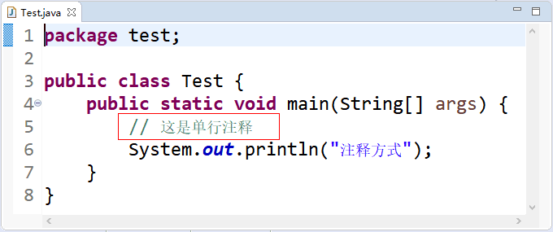
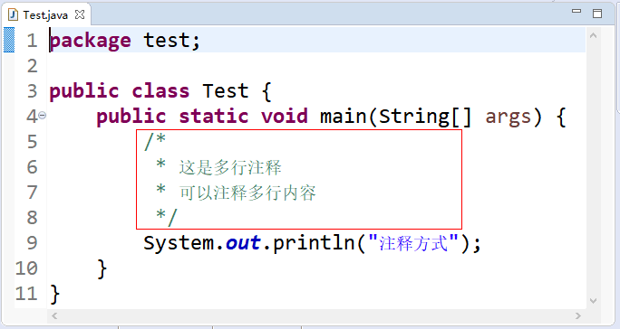
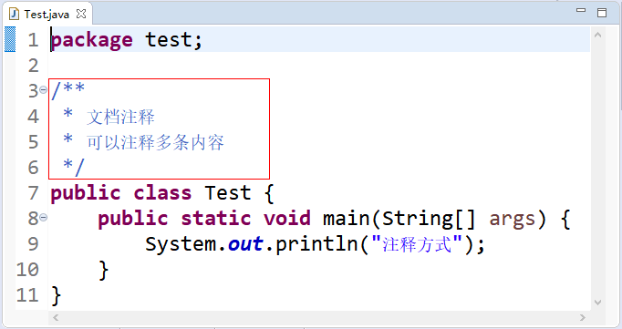

首页 > Java教程 > Java程序设计基础
Java注释：单行、多行和文档注释
注释是对程序语言的说明，有助于开发者和用户之间的交流，方便理解程序。注释不是编程语句，因此被编译器忽略。
Java 支持以下三种注释方式：
注意：多行注释可以嵌套单行注释，但是不能嵌套多行注释和文档注释。
注意：文档注释能嵌套单行注释，不能嵌套多行注释和文档注释，一般首行和尾行也不写注释信息。
文档注释可以通过 Javadoc 命令把文档注释中的内容生成文档，并输出到 HTML 文件中，方便记录程序信息。还可以包含一个或多个 @ 标签，每个 @ 标签都在新的一行开始。关于 Javadoc 的具体标签和使用可阅读学习《Javadoc入门教程》一节。
在 Java 中，一行注释以双斜杠“//”标识；多行注释包含在“/*”和“*/”之间；文档注释包含在“/**”和“*/”之间。当编译器执行到“//”时，就会忽略该行“//”之后的所有文本；当执行到“/*”时，会扫描下一个“*/”并忽略“/*”和“*/”之间的任何文本；当执行到“/**”时，也会扫描下一个“*/”并忽略“/**”和“*/”之间的任何文本内容。
Java 支持以下三种注释方式：
1）单行注释
以双斜杠“//”标识，只能注释一行内容，用在注释信息内容少的地方。打开 Eclipse，在 Java 代码中使用单行注释，如图 1 所示。

图 1 单行注释
图 1 单行注释
2）多行注释
包含在“/*”和“*/”之间，能注释很多行的内容。为了可读性比较好，一般首行和尾行不写注释信息（这样也比较美观好看），如图 2 所示。注意：多行注释可以嵌套单行注释，但是不能嵌套多行注释和文档注释。

图 2 多行注释
图 2 多行注释
3）文档注释
包含在“/**”和“*/”之间，也能注释多行内容，一般用在类、方法和变量上面，用来描述其作用。注释后，鼠标放在类和变量上面会自动显示出我们注释的内容，如图 3 所示。注意：文档注释能嵌套单行注释，不能嵌套多行注释和文档注释，一般首行和尾行也不写注释信息。

图 3 文档注释
图 3 文档注释
文档注释可以通过 Javadoc 命令把文档注释中的内容生成文档，并输出到 HTML 文件中，方便记录程序信息。还可以包含一个或多个 @ 标签，每个 @ 标签都在新的一行开始。关于 Javadoc 的具体标签和使用可阅读学习《Javadoc入门教程》一节。
在 Java 中，一行注释以双斜杠“//”标识；多行注释包含在“/*”和“*/”之间；文档注释包含在“/**”和“*/”之间。当编译器执行到“//”时，就会忽略该行“//”之后的所有文本；当执行到“/*”时，会扫描下一个“*/”并忽略“/*”和“*/”之间的任何文本；当执行到“/**”时，也会扫描下一个“*/”并忽略“/**”和“*/”之间的任何文本内容。
关注公众号「站长严长生」，在手机上阅读所有教程，随时随地都能学习。内含一款搜索神器，免费下载全网书籍和视频。

微信扫码关注公众号